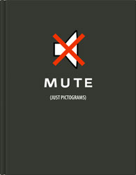

Mute (Just Pictograms)
Design:Lisa Ramirez
Measures:220mm×170mm
Binding:450pp., hardcover
color photographs,
Text in English
Date:2006
ISBN:978-981-245-219-1
Subject:illustrations
Publisher:PageOne (Singapore)
Description:Mute (Just Pictograms) aims to collect and internationally display the best designs in symbols for transportation, machines, menage, packaging, electronics, publications, maps, events, spaces, museums, etc. An innovative and refreshing sourcebook.
Price: гд 240 RMB
(Only for Chinese market)
